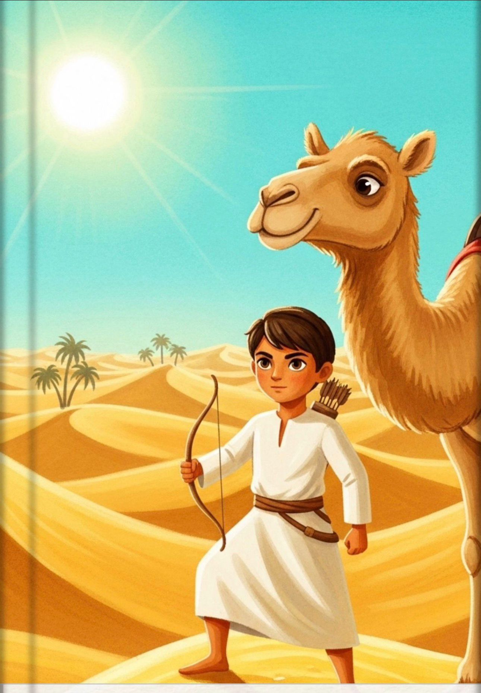
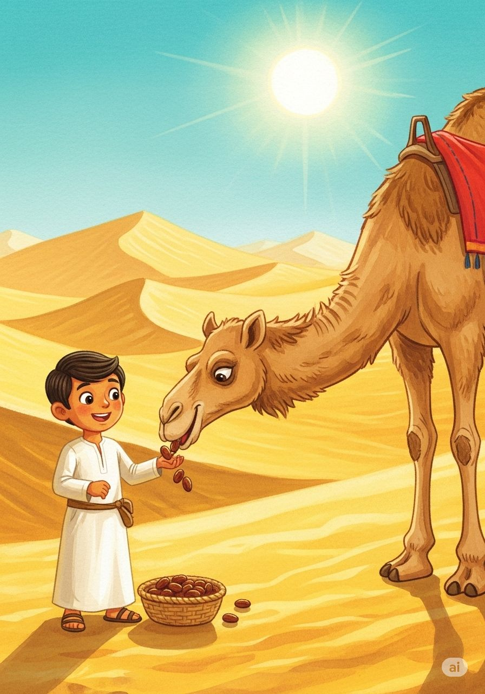
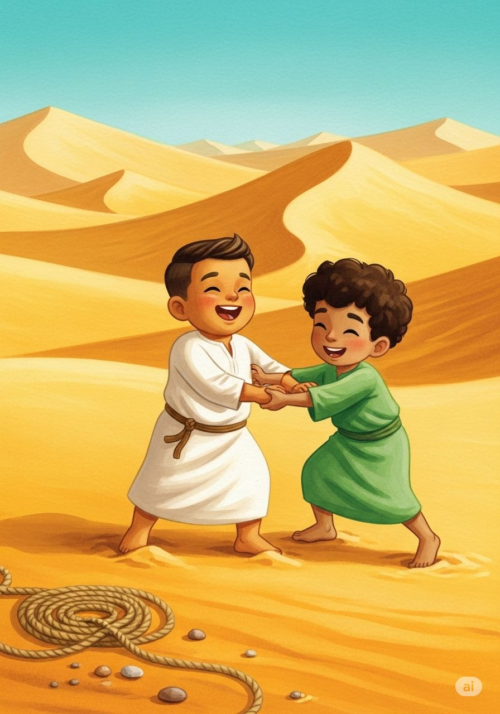
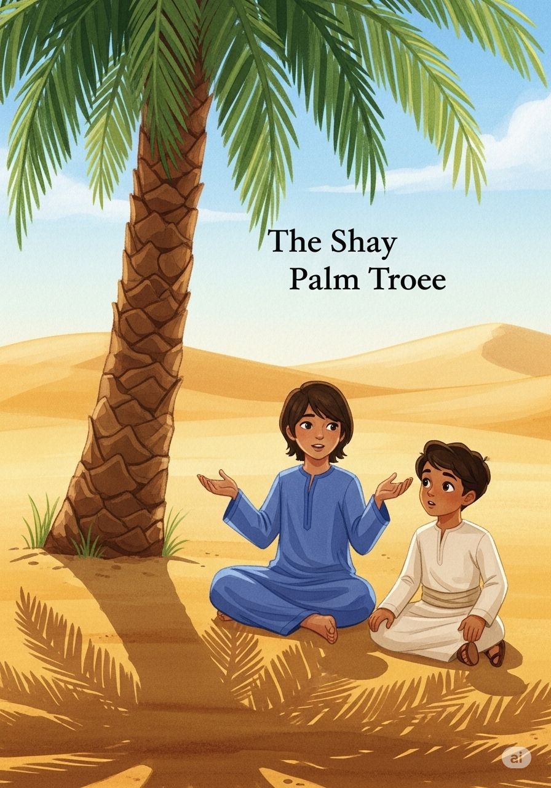
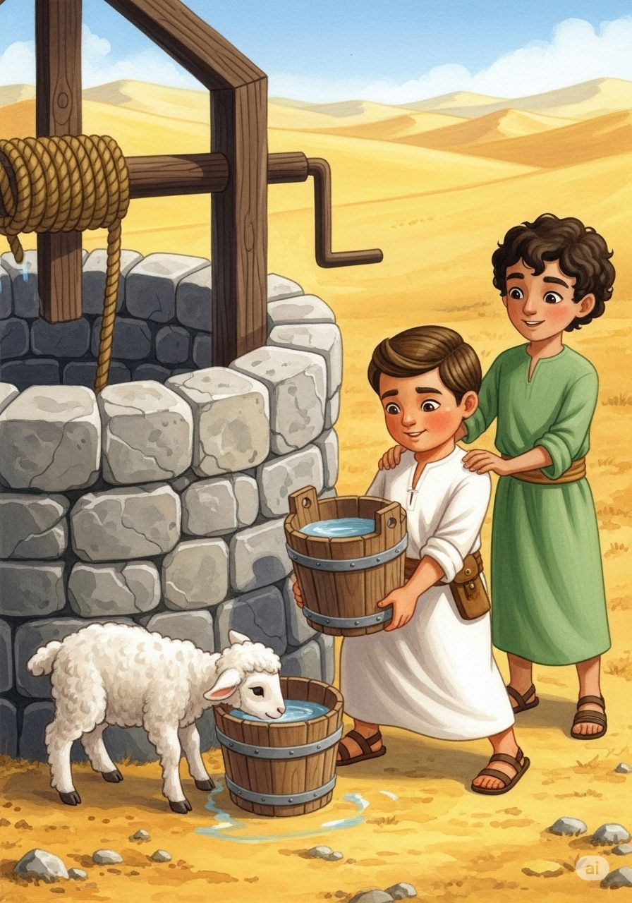
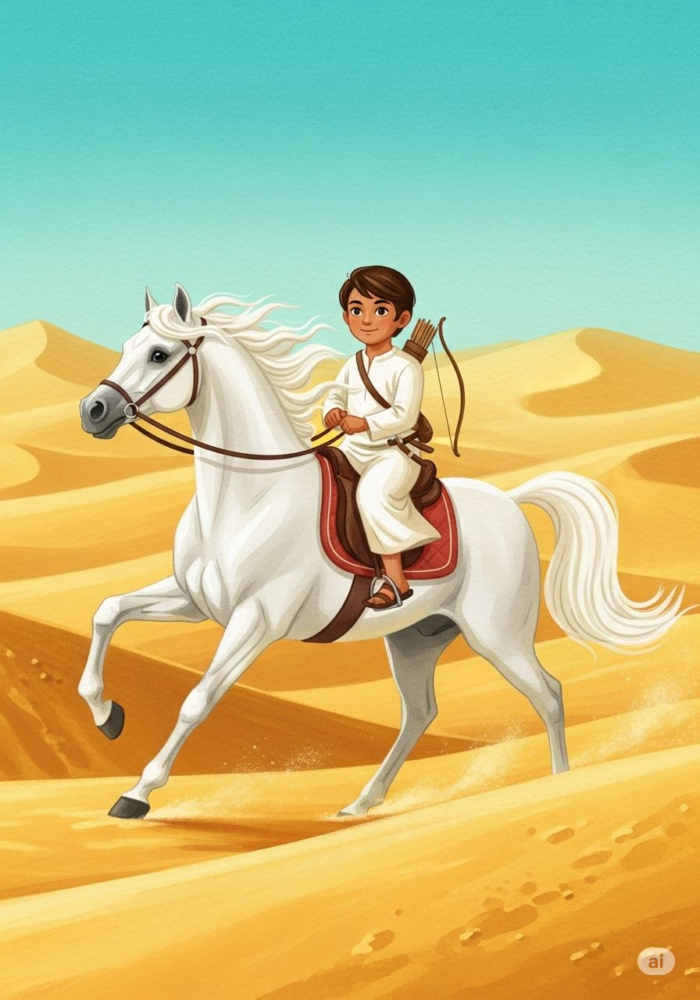

Sevgili Çocuklar! Bu hikayede sadece güçlü bir çocuğu değil;
Sabır, Merhamet, Nezaket ve Yardımlaşma
gibi İslam'ın temel kavramlarını Halid ile beraber öğreneceğiz.
Hazırsanız, Mekke'nin sıcak kumlarına doğru yolculuğumuz başlasın!
Uzaklarda, güneşin pırıl pırıl parladığı Mekke şehrinde Halit isminde çok güçlü bir çocuk yaşardı. Halit, çölün altın rengi kumlarında koşmayı ve koca hörgüçlü develeriyle arkadaşlık etmeyi çok severdi. Her sabah develerinin yanına gider, onlara en tatlı hurmaları yedirirdi. Halit, "Ben büyüyeceğim ve dünyanın en güçlü pehlivanı olacağım!" derdi.

Halit sadece develeri değil, oyun oynamayı da çok severdi. En sevdiği oyun ise arkadaşı Zeyd ile güreş tutmaktı. Halit, Zeyd'i şakacıktan yakalar ve kumların üzerinde yuvarlanırlardı. Halit, güçlü kollarıyla ağır halatları çeker, "Bakın, ne kadar da güçlüyüm!" diye bağırırdı. Halit'e göre güç, sadece kasların büyük olması demekti.

Bir gün Halit, arkadaşı Mus'ab'ın yanına gitti. Mus'ab ona gülümsedi ve şöyle dedi: "Biliyor musun Halit, bugün çok güzel bir şey öğrendim. Gerçekten güçlü olan kişi, öfkelendiğinde kendine hakim olan ve herkese nazik davranandır." Halit bu yeni fikri duyunca çok şaşırdı. Güç sadece bilekte değil miydi?

Halit ve Zeyd, çölün kenarında susamış küçük bir kuzu gördüler. Halit, Mus'ab'ın söylediklerini hatırladı. Hemen güçlü kollarını kullandı ve kuyudan ağır bir kova su çekti. Suyu kuzuya ikram etti. Zeyd, "İşte bu gerçek bir güç, Halit! Gücünü yardım etmek için kullanıyorsun," dedi. Halit, kalbinin de kasları kadar güçlü olabileceğini anlamaya başlıyordu.

Artık Halit sadece bileğiyle değil, sevgi dolu kalbiyle de en güçlü çocuktu. Atına atladı ve rüzgar gibi koşturmaya başladı. Arkadaşlarıyla beraber yeni şeyler öğrenmek, ok atmak ve iyilik yapmak onu dünyanın en mutlu çocuğu yapıyordu. Halit, "Ben Halit! Hem çok güçlüyüm hem de çok nazik!" diyerek çölde neşeyle ilerledi.

Halit "Gerçek Gücü" buldu ama çölün derinliklerinde onu bekleyen çok daha büyük bir sınav var!
❓ Acaba Halit, karşısına çıkacak olan kötü kalpli dev adamla karşılaştığında ne yapacak?
❓ Öfkesine yenilip kavga mı edecek, yoksa öğrendiği sabrı mı gösterecek?
❓ Halit'in atı "Rüzgar" onu hangi gizli mağaraya götürecek?